Let your AI agent
build your game inside Blender.
Model the art, build the levels and write the game in one place. Any agent that speaks MCP drives Blender and your TypeScript, plays the game, looks at it and fixes what's wrong. What you make runs in any browser.
Works with Claude Code, Codex and any MCP client.
- Blender 5.2
- three.js
- Rapier
- TypeScript
- Vite
- Model Context Protocol
AI agents can build 3D games now. The usual ways each have a catch.
Vibe-code straight into three.js
Quick to start, but every model has to be written as code. No modeling tools, and nothing on screen you can grab and fix by hand.
Use a game engine
Unity, Godot and Unreal are built to run games, not to make 3D art, so the models still come from somewhere else, usually Blender.
Split the work across tools
Every change means export, import, fix the scale and materials, and find the code that uses it. You and the agent both lose time switching.
One platform
Blender is where you model, build levels and give objects their game behaviour, and TypeScript holds the rules. Your agent works on all of it through one MCP server, and you can change anything by hand at any time.
The web as the target
The game runs on three.js in any modern browser, on any operating system, and ships as a static web build you can host anywhere or share as a link. No engine to install, no per-platform builds.
Say what you want. Watch Blender build it.
Your agent writes a short plan, then makes it real: the terrain, the props, colliders, the player and the camera. Every step lands in Blender as an undo step you can see.
- 64 MCP tools, each returning something to check
- Every action listed live, with Undo to Here
- Pause the agent, or protect what it must not touch
Worlds in seconds that stay editable.
Geometry-nodes builders lay rivers, roads, cliffs, villages and forests. Every part stays a live recipe you can change by hand or by asking, and repeated objects export as GPU instances.
- 22 parametric kits, from rocks to rigged characters
- Asset libraries linked into levels as prefabs
- Python in Blender for anything else
From scene to game without leaving Blender.
Attach components in the Properties, write systems in TypeScript with hot reload, and lay out menus and HUDs in Blender itself. Press F5 and it plays right in the viewport.
- Animation state machines, navigation meshes, audio
- Title, pause and end screens made in Blender
- 33 ready-made game shaders: water, lava, foliage and more
It plays its own game.
Scripted playtests run in a headless browser and return screenshots, game state and logs. The agent finds what's wrong, fixes it, and runs the same test again to prove it.
- Screenshots through the game's own renderer
- Frame time, draw calls and triangle counts
- Checkpoints, undo and crash recovery
Publish to the web.
Build Web writes a static site with compressed geometry, WebP textures and the licence notices included. Host it anywhere, or zip it up for itch.io.
- Runs in any modern browser, on any system
- Several levels per game, with saved progress
- Your game is yours: an MIT runtime, no credit needed
The same level, in Blender and in the browser.
Drag across to compare. Procedural materials are baked and scatters export as GPU instances, so the game matches Blender.
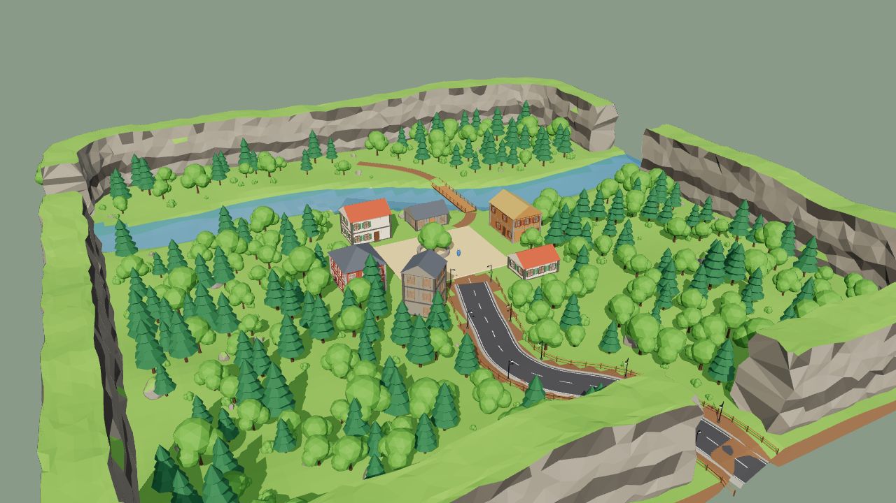
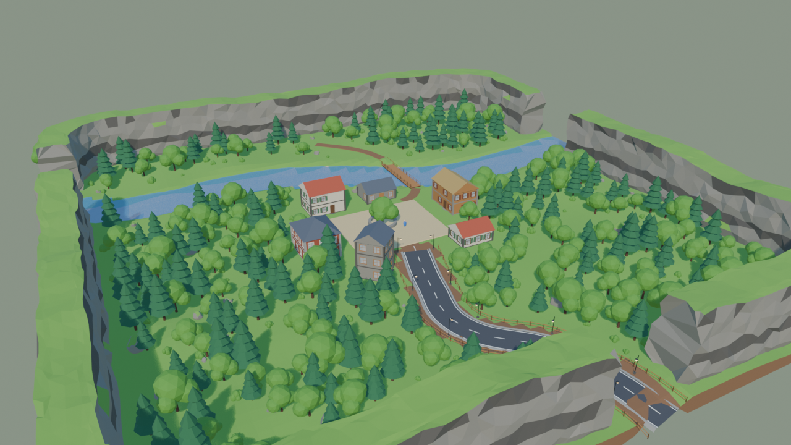
BlenderBrowserA 150 m valley built in about 2 seconds: cliffs, a river with a bridge, a fenced road with lamps, a village and 273 trees.
- 64MCP tools for your agent
- 22parametric kits
- 33ready-made game shaders
- 5playable templates
- 20video lessons
Start from a game that already plays.
Each one has a title screen made in Blender, pause and options menus, a win or game-over screen, sound, particles, a sky and fog.
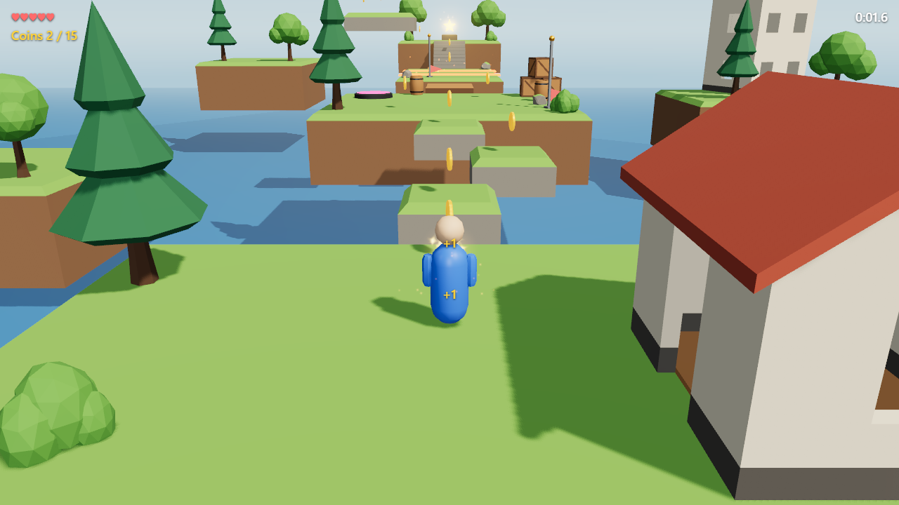
Sky Garden
Floating islands, coins, a bounce pad, moving platforms and checkpoints.
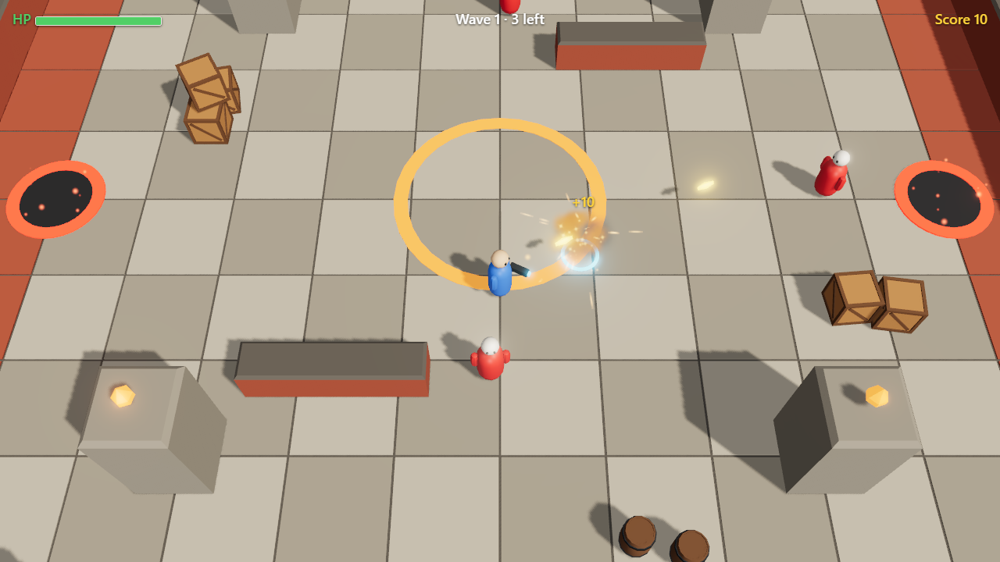
The Pit
Top-down, mouse aim, enemy waves spawned as prefabs, health and score.
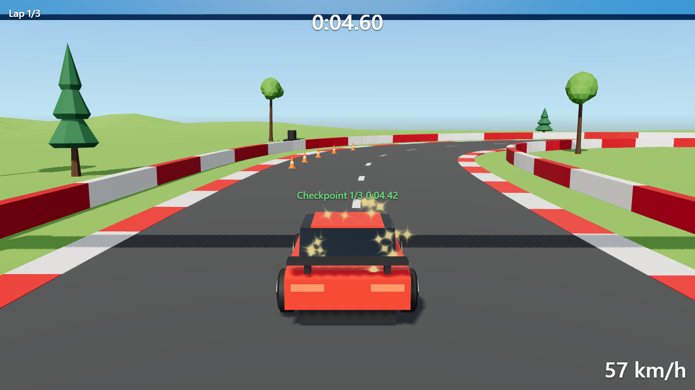
Pine Valley Circuit
An arcade car, a 390 m track, gates, laps and a chase camera.
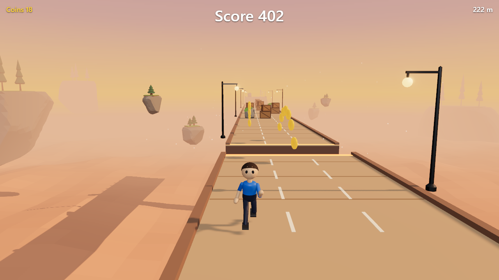
Sunset Skyway
Three lanes, coins, obstacles and power-ups, on a track built from prefabs.
Or start from the small Starter. And any game you make can become a template for your next one.
From one line to a playable game.
"A small 3D game: collect all the gems on a floating island before the timer runs out." Two minutes, with sound.
Learn it click by click.
20 short lessons with a voiceover and captions, from installing the extension to publishing a game.
Getting started
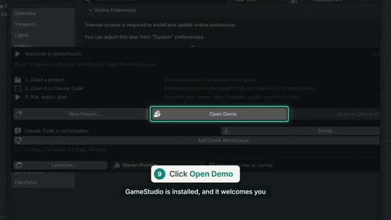
1:27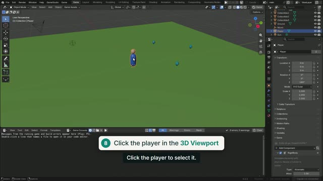
1:39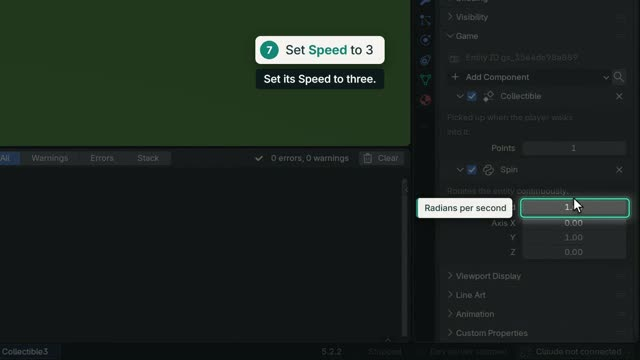
1:40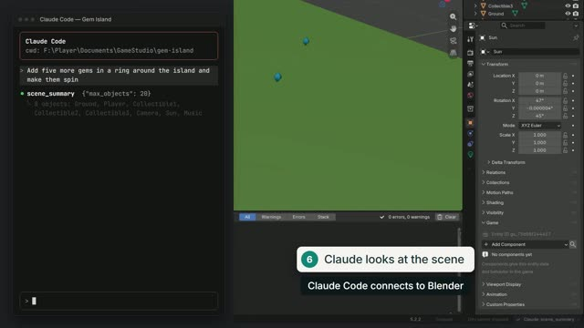
1:41Building the world
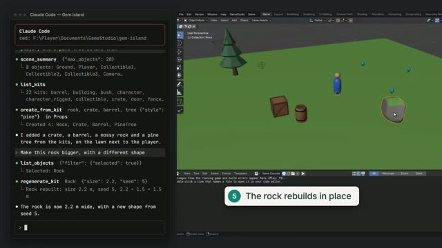
1:45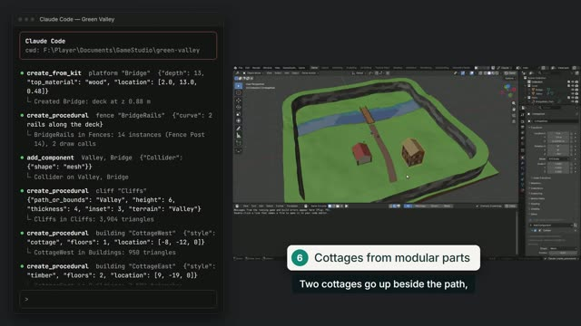
1:28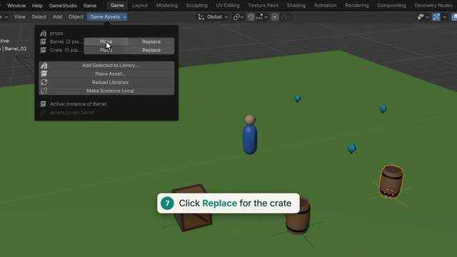
1:59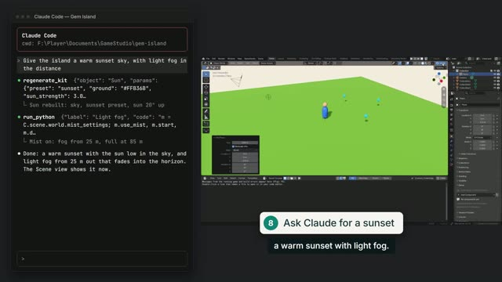
1:53Making it a game
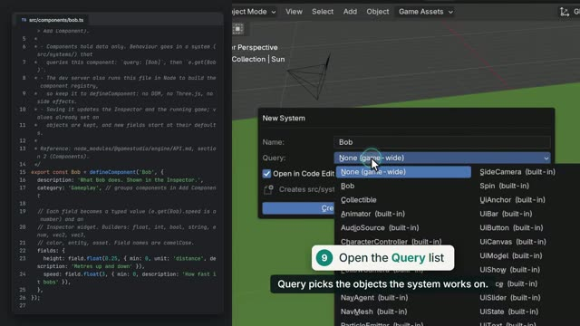
1:53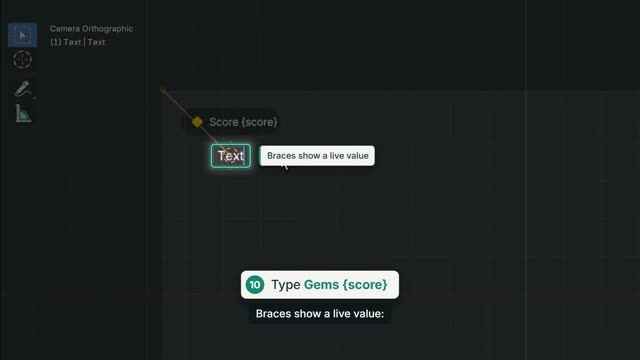
1:57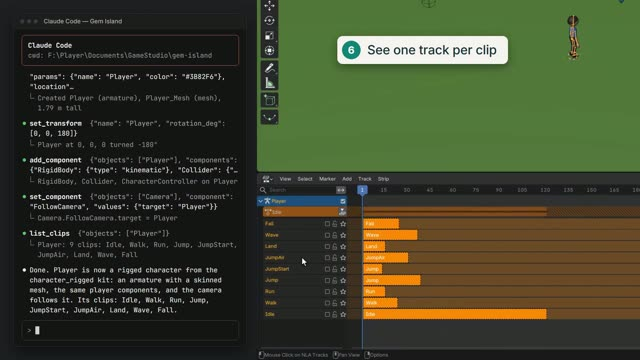
1:57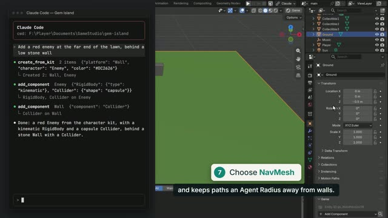
2:01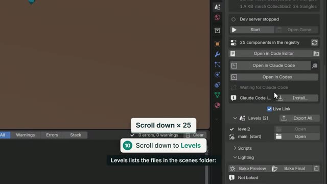
1:49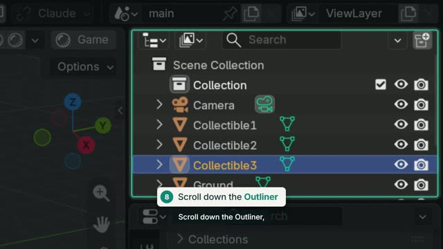
1:51Working with an AI agent
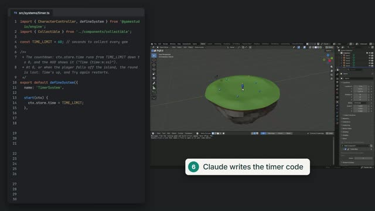
2:00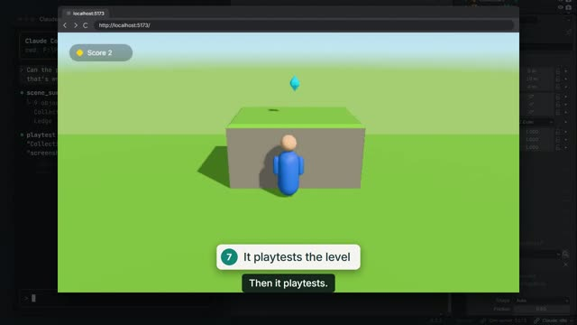
1:32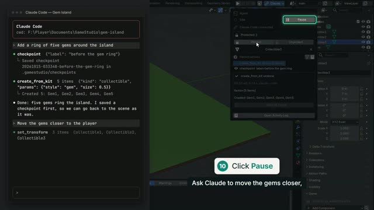
1:48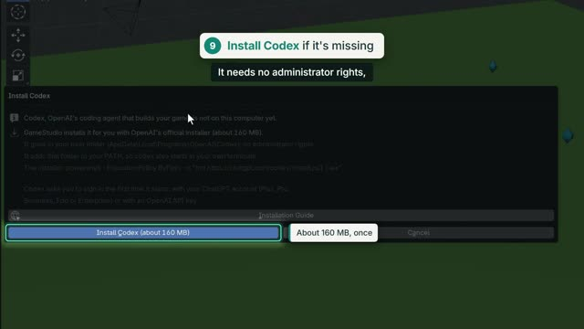
1:54Shipping
Everything, written down.
The illustrated user manual
From installation to publishing, with screenshots. One page you can also read offline.
Reference
For developers, and for the agents themselves. These open on GitHub.
Playing in four steps.
- InstallDownload the zip, then in Blender 5.2+: Edit › Preferences › Get Extensions › Install from Disk. It sets up the rest after one question.
- Start a projectGameStudio › New Project and pick a template, or open the demo game from GameStudio › Examples.
- Connect your agentOpen in Claude Code or Open in Codex does it in one click; any other MCP client starts the project's server.
- Press F5Describe your game, watch it appear, and play it right in Blender. Change anything, by hand or by asking.
Start building today.
Free and open source, for Blender 5.2 or newer. Bring your own AI agent.